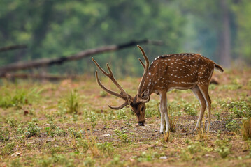
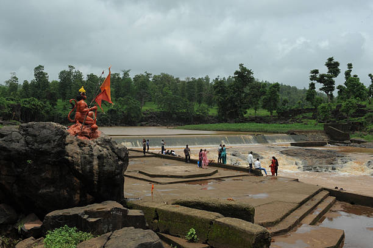
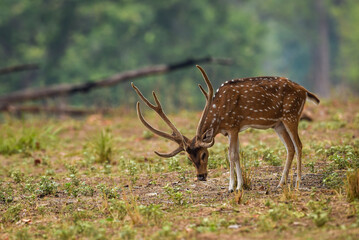
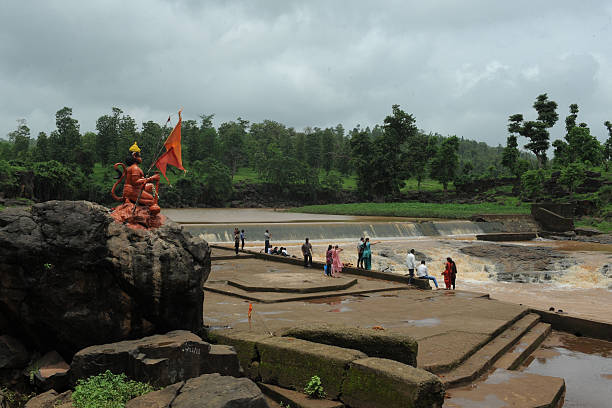

HISTORY
Saputara in Gujarat is located about 164 km from Surat, about 1000 m above sea level on the Maharashtra-Gujarat border. Blessed with natural beauty and bio-diversity, Saputara enjoys cool climate throughout the year and has much to offer in the form of gardens, parks and sanctuaries. Minimally commercialized and still unspoiled, Saputara is an ideal tourist spot to enjoy with your family. The hills and forests around the hill station are an ideal place for trekking enthusiasts. Trekking trails to Rajat Pratap and to Tridhara near Dhupgarh are very popular. The town is also known as the 'Abode of Serpents' and even has a shrine to serpent god on the banks of river Sarpaganga.
Know more

 


